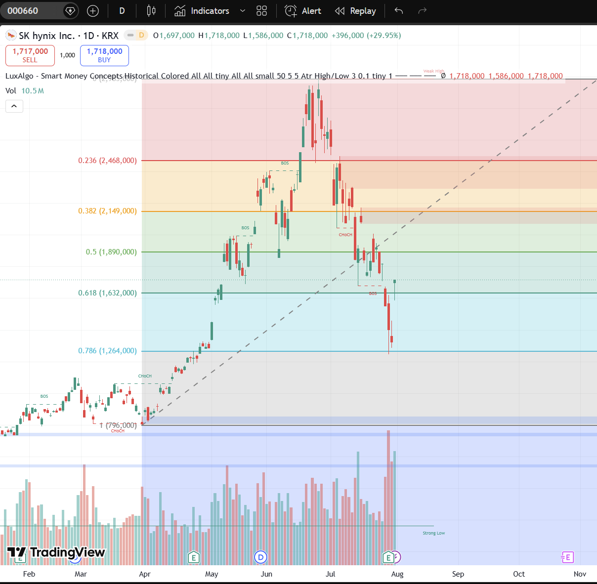
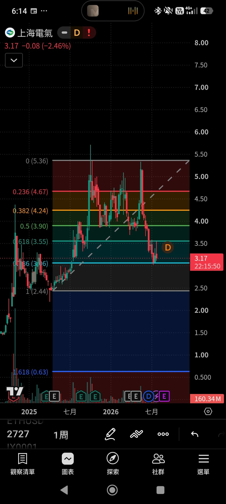
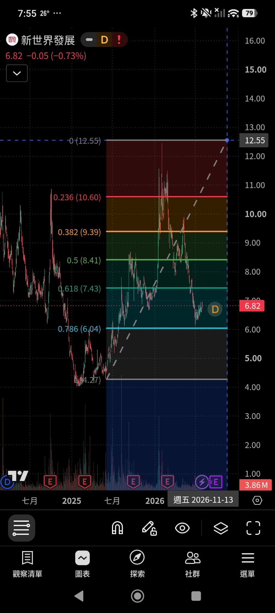
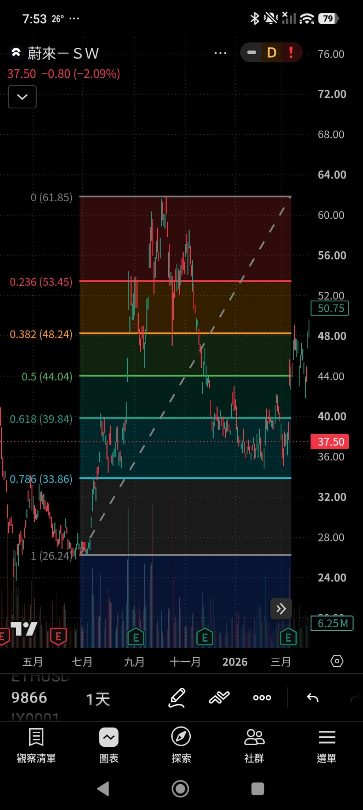
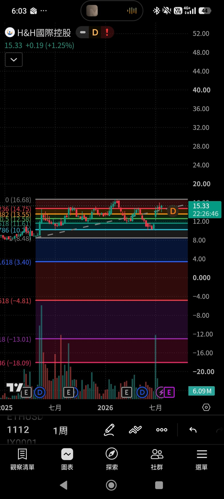
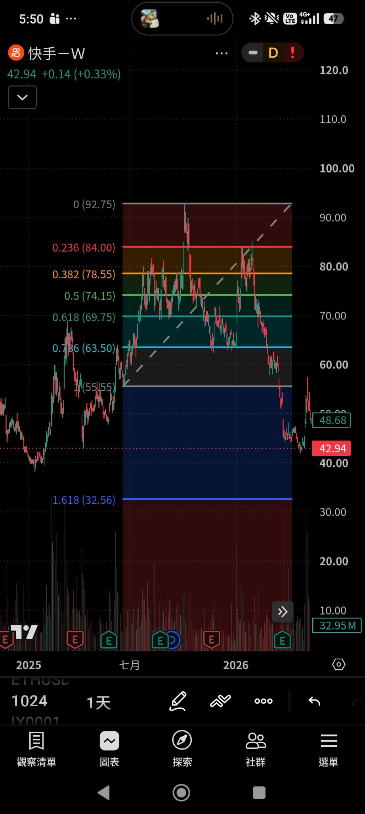
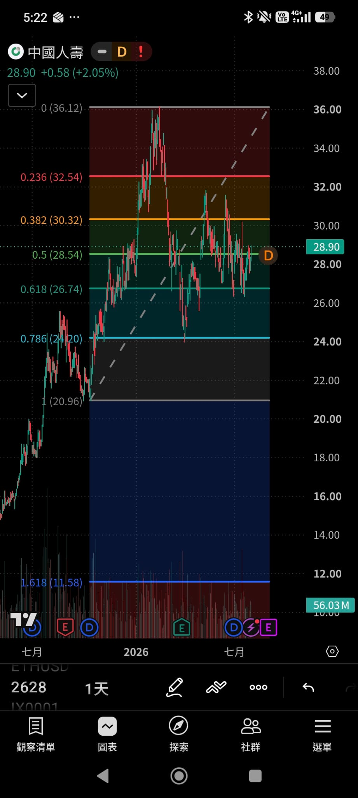
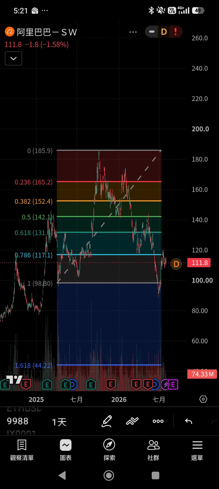

01
跌浪 5 浪結構
確認股價處於下跌浪的 5 浪序列中，第 1 浪為初步下跌，後續還有 2–5 浪但第 1 浪底部是關鍵轉折參考點。
✓ 識別 5 浪下跌形態
Fibonacci 0.786 · 極深回調買入法
在跌浪中，5浪中的第一個浪底部的 Fibonacci 0.786 回調位時買入。 0.786 是極深回調（接近完全回吐），通常代表最後洗盤位，止跌回升後升幅顯著。 止損採 1:1 風險報酬——虧損 1 單位，目標獲利 1 單位，嚴守紀律。
在 5 浪下跌結構中，於第 1 浪底部的 Fibonacci 0.786 回調位進場買入。
確認股價處於下跌浪的 5 浪序列中，第 1 浪為初步下跌，後續還有 2–5 浪但第 1 浪底部是關鍵轉折參考點。
以第 1 浪的高點至底部畫出斐波那契回撤工具，0 為高點、1 為第 1 浪底部（起漲點）。
0.786 是極深回調（接近完全回吐），股價回測至此水平時，代表賣壓接近衰竭，是最後的洗盤區域。
在 0.786 位置出現止跌信號（收盤不再創低、成交量萎縮後放大），確認洗盤完結，進場後升幅通常顯著。
理解 0.786 回調位為何是「最後洗盤位」。
0.786 回撤意味著價格已回吐前期漲幅的 78.6%，接近完全回吐（1.0），是趨勢最後的考驗。
極深回調會洗走最後一批持倉不堅定的投資者，籌碼集中在強手手中，為反彈蓄力。
5 浪下跌中，第 1 浪底部是整個跌浪的起點參考。在此位置的 0.786 回調代表跌勢初期已充分釋放。
歷史案例顯示，在 0.786 位置止跌後的反彈幅度通常顯著，風險報酬比極具吸引力。
0.786 是本策略的核心進場水平，介於 0.618 與 1.0 之間。
當價格回測至 0.786 水平並出現止跌信號時進場。止損設在 1.0（第 1 浪底部）下方，採 1:1 風險報酬比管理倉位。
以下 10 個真實圖表，展示股價在 Fibonacci 0.786 水平的回測與反彈。

日線圖 Fib 0.786 位於 117.1，價格從高點 185.9 深度回調，在 0.786 區域尋找支撐。

週線圖 Fib 0.786 位於 10.23，價格曾跌破後強勢反彈至 15.33，驗證 0.786 洗盤位效力。

日線圖 Fib 0.786 位於 24.20，從高點 36.12 回調後在 0.786 止跌，目前反彈至 28.90。

日線圖 Fib 0.786 位於 63.50，從高點 92.75 急跌至 42.94，深度回調超過 0.786 水平。

另一角度觀察 9988 的 0.786 回調區間（117.1），價格在 0.786 與 1.0 之間震盪築底。

日線圖 Fib 0.786 位於 33.86，從高點 61.85 回調，在 0.618–0.786 區間反彈至 37.50。

2628 在 0.786（24.20）獲得支撐後反彈，目前價格 28.90 已回到 0.5 水平（28.54）上方。

日線圖 Fib 0.786 位於 1,264,000 韓元，強勢上漲後回調測試 0.618–0.786 區間，CHoCH 出現。

日線圖 Fib 0.786 位於 3.06，當前價格 3.17 正好在 0.786 水平附近，等待止跌確認。

日線圖 Fib 0.786 位於 6.04，從高點 12.55 深度回調，當前 6.82 在 0.786 上方築底。
必須先識別完整的 5 浪下跌形態，確認當前處於跌浪中，而非上升趨勢的回調。
以第 1 浪的高點（0）至底部（1.0）畫斐波那契，0.786 為進場參考。
價格觸及 0.786 後，等待收盤不再創低、出現陽線或成交量放大，才進場買入。
止損設在 1.0 水平（第 1 浪底部）下方；風險報酬比採 1:1，虧 1 賺 1，跌破 1.0 即止損離場。
第一目標 0.618，第二目標 0.5，第三目標 0.382，分批獲利了結。
單筆風險不超過帳戶 1–2%。0.786 雖然勝率高，但仍需嚴守止損紀律。
Fib 必須以上升趨勢的第一個浪回調低位作為計算基準，不可任意選取其他波段低點。